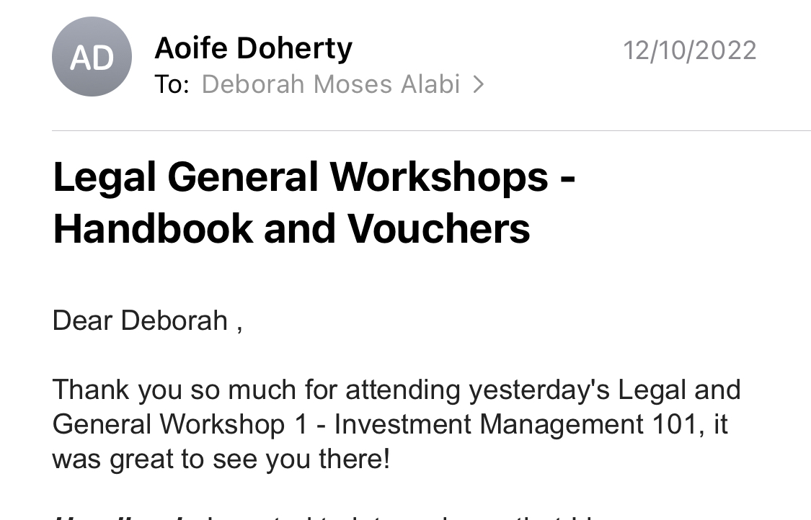
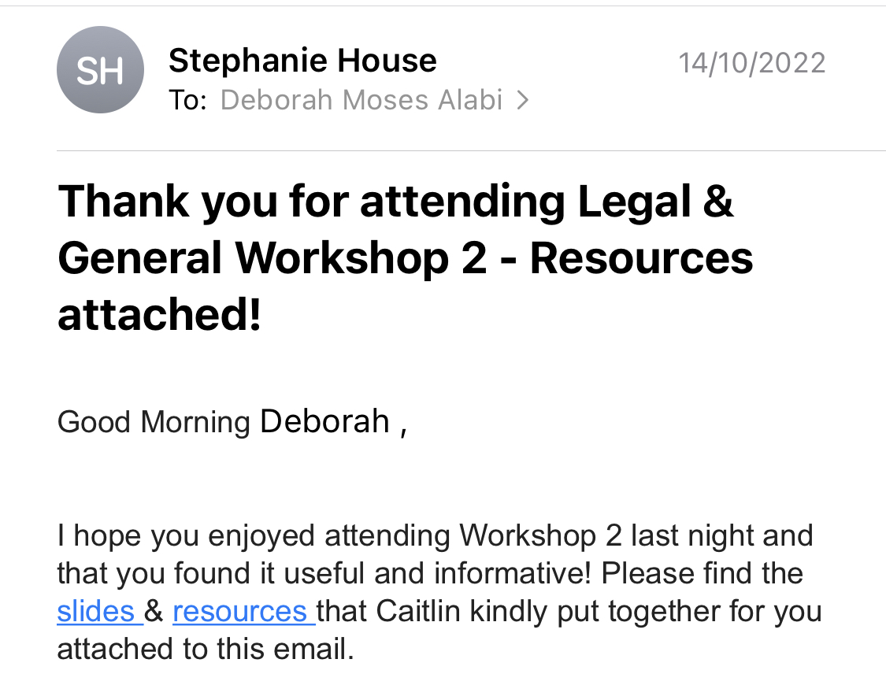
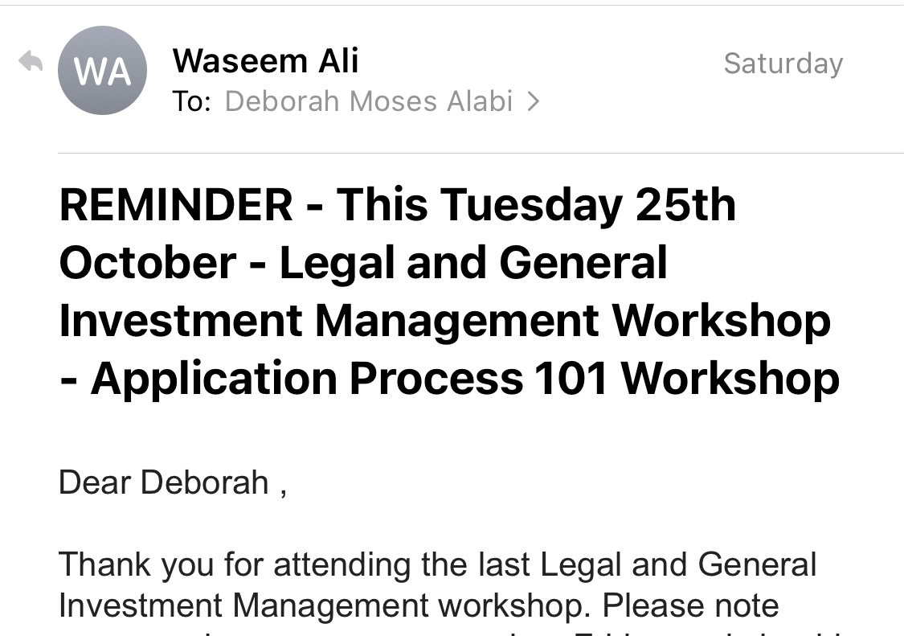
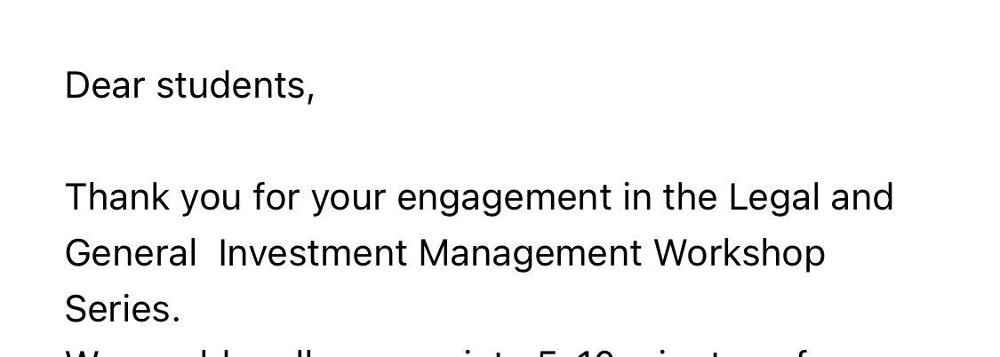

| Workshop No. | Reflection | Images |
|---|---|---|
Legal and General Investment Management Workshop 1 |
During the first workshop, I got an insight into investment management; which handle financial assets & provide short & long-term strategies. I also heard from multiple workers part of the investment management team which plan, research and monitor financial assets. The company added ‘general’ into the name because they chose to expand, as they continuously innovate across public & private assets. This workshop was an overall introduction to the company and some of the hiring processes such as case studies. We also briefly got aid into writing cover letters and how they should be indirectly targeted to what we are applying for. |
 |
Legal and General Investment Management workshop 2 |
During the second session … and got some assessment preparation for some of their new opening roles They gave us great details on application process such as looking up details about the company you’re applying for to show your interest, getting someone to look over your initial application as there are often many spelling errors in candidate’s application. Overall workshop 2 solidified my foundations of general application processes and gave us insights on what employers are looking for during interviews e.g. don’t lie about your weaknesses but also don’t overdo it. Make sure to add quantities to information you provide. During the next session we got to hear from many different speakers who spoke about different case studies and how they would go about with a solution |
 |
Legal and General Investment Management workshop 3 |
During the second session … and got some assessment preparation for some of their new opening roles They gave us great details on application process such as looking up details about the company you’re applying for to show your interest, getting someone to look over your initial application as there are often many spelling errors in candidate’s application. Overall workshop 2 solidified my foundations of general application processes and gave us insights on what employers are looking for during interviews e.g. don’t lie about your weaknesses but also don’t overdo it. Make sure to add quantities to information you provide. During the next session we got to hear from many different speakers who spoke about different case studies and how they would go about with a solution |
 |
Legal and General Investment Management workshop 4 |
During the second session … and got some assessment preparation for some of their new opening roles They gave us great details on application process such as looking up details about the company you’re applying for to show your interest, getting someone to look over your initial application as there are often many spelling errors in candidate’s application. Overall workshop 2 solidified my foundations of general application processes and gave us insights on what employers are looking for during interviews e.g. don’t lie about your weaknesses but also don’t overdo it. Make sure to add quantities to information you provide. During the next session we got to hear from many different speakers who spoke about different case studies and how they would go about with a solution |
 |